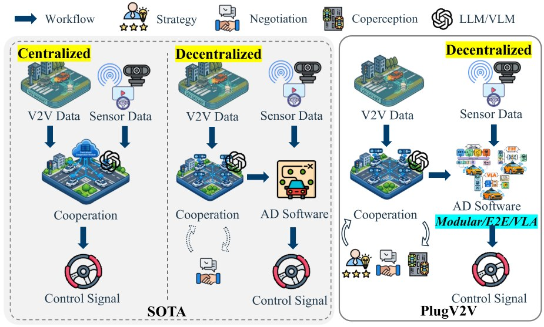
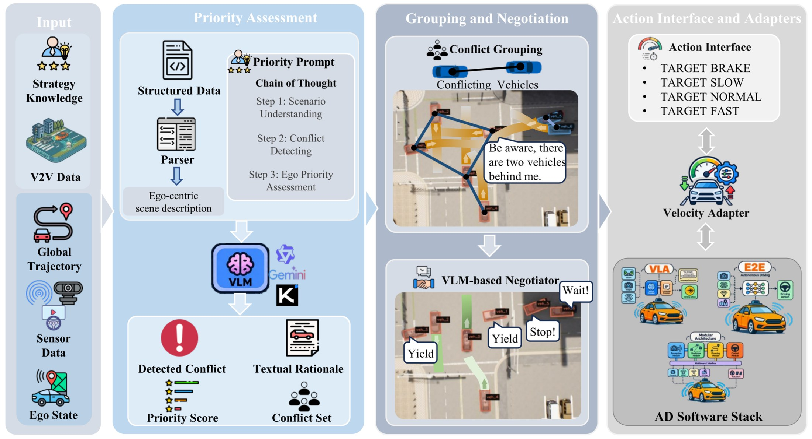
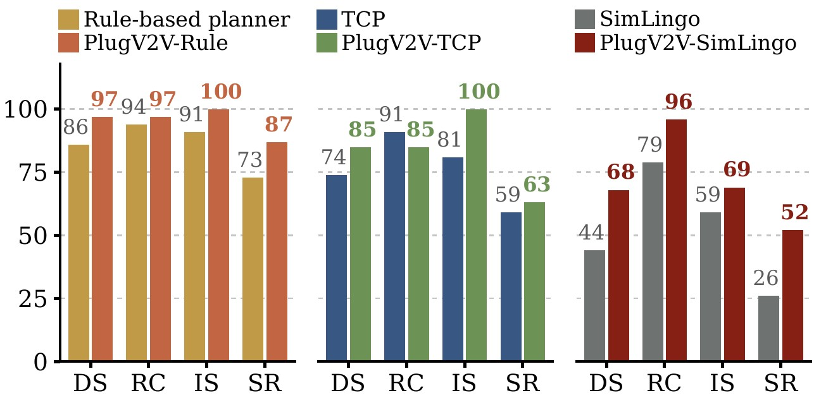
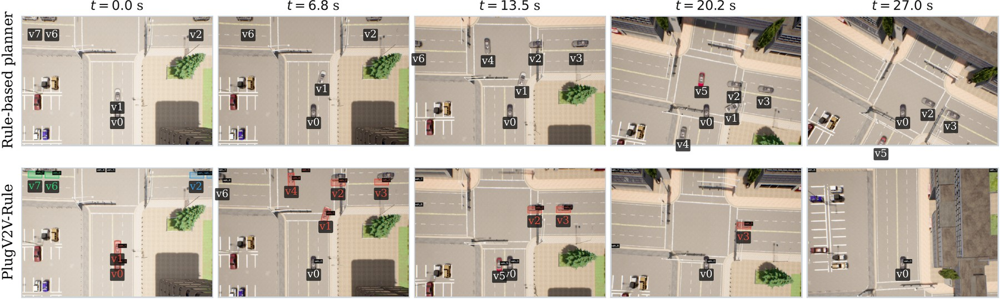

Cooperation added to a driving stack it knows nothing about — through an interface four values wide, at one thirtieth of the control rate, with no retraining.
Authors and affiliations withheld for double-blind review.

A vision-language model fuses compact V2V messages with each vehicle's own cameras, groups the vehicles that actually conflict, and lets each group negotiate a passing order. The agreement leaves as one of four target-speed tokens, so the same agent supervises a rule-based planner, an end-to-end model and a vision-language-action model without retraining any of them.
Interactive traffic requires vehicles to coordinate passing order, merging gaps and yielding behaviour, yet existing language-based cooperation methods provide only part of the required cooperation stack and are typically tied to a single driving backend. They rarely combine ego-centric cooperative observations, explicit strategy knowledge, multi-agent negotiation and bounded execution within one framework.
We present PlugV2V, a backend-agnostic plug-in/plug-out semantic V2V cooperation agent that uses a vision-language model to fuse compact V2V state messages with local camera observations, form conflict groups, and negotiate schema-checked target-speed actions at low frequency while the host driving stack retains high-frequency control. Lightweight backend adapters connect the same agent to rule-based, end-to-end and vision-language-action driving stacks.
On the 46-route CARLA InterDrive benchmark, cooperative observations, strategy knowledge and negotiation provide complementary gains, together improving the driving score of a rule-based planner from 85.72 to 96.57. PlugV2V also outperforms the strongest reported method on the same benchmark in both evaluation modes, with and without non-communicating traffic, exceeding the previous best by 6.45 and 4.04 driving-score points. Across heterogeneous backends it improves rule-based, end-to-end and vision-language-action stacks by approximately 11, 11 and 24 points respectively.
A vision-language model combines multi-vehicle observations, explicit strategy knowledge, conflict grouping and bounded negotiation to produce schema-checked group agreements — decentralised, with no roadside unit and no central planner.
Four target-speed tokens and a small per-backend adapter. The same agent supervises rule-based, end-to-end and vision-language-action stacks. Remove it and each host returns to its own policy, exactly.
Hosted and open-source backbones, ablations of every cooperation component and strategy knowledge, and plug-in versus plug-out on three heterogeneous backends across 92 closed-loop tests.

Each vehicle scores itself and names the neighbours it believes it conflicts with. Those reports are symmetrised into a graph whose connected components become independent negotiation groups, so vehicles that cannot affect each other never enter the same conversation. Members of a group exchange proposals for at most K rounds, and the agreement leaves as a single token.
Between cooperation cycles the host is in sole control. That is what makes the agent removable: unplugging it restores the unmodified stack rather than leaving a gap where a policy used to be.
CARLA 0.9.10.1 with the InterDrive multi-ego routes: 46 configurations across Town05–Town07, split into 18 intersection-crossing, 20 lane-merge and 8 lane-change cases. Each route runs with cooperative vehicles only and again with additional non-communicating traffic. Most routes use two connected vehicles, rising to six to eight in dense intersections and highway lane changes.
| Method | Type | DS ↑ | RC ↑ | IS ↑ | SR ↑ |
|---|
Click a metric to sort; the split selector switches between the overall score and the three scenario families. DS driving score, RC route completion, IS infraction score, SR success rate; higher is better throughout. Competing numbers are as reported by their authors on the same benchmark; the rule-based, TCP and SimLingo rows are reproduced locally.
| Configuration | DS ↑ | RC ↑ | IS ↑ | SR ↑ |
|---|---|---|---|---|
| Rule-based planner alone | 85.72 | 94.12 | 0.91 | 0.73 |
| + single-vehicle query | 87.36 | 94.32 | 0.93 | 0.63 |
| + cooperative observations | 78.57 | 79.32 | 0.99 | 0.61 |
| + strategy knowledge | 87.41 | 95.27 | 0.91 | 0.74 |
| + observations + strategy | 92.97 | 95.75 | 0.97 | 0.74 |
| + grouping and negotiation (full) | 96.57 | 96.57 | 1.00 | 0.87 |
Observations without strategy knowledge are safer but over-cautious — the agent sees the other vehicles but has no rule for who yields. The two only pay off together.
| VLM backbone | DS ↑ | RC ↑ | IS ↑ | SR ↑ | Serving |
|---|---|---|---|---|---|
| Hosted | |||||
| gemini-2.5-flash | 96.57 | 96.57 | 1.00 | 0.87 | API |
| kimi-k2.6 | 95.26 | 95.45 | 1.00 | 0.85 | API |
| qwen3.7-plus | 93.20 | 95.48 | 0.97 | 0.85 | API |
| qwen3.6-flash | 92.12 | 97.54 | 0.94 | 0.83 | API |
| kimi-k2.5 | 89.84 | 94.19 | 0.95 | 0.74 | API |
| Open-source · one consumer GPU | |||||
| Qwen3-VL-8B | 86.57 | 93.49 | 0.93 | 0.65 | 16.3 GB |
| Qwen3-VL-4B | 84.16 | 92.51 | 0.91 | 0.67 | 8.3 GB |
| Qwen3-VL-2B | 56.20 | 59.10 | 0.96 | 0.48 | 4.0 GB |
The smallest model does not fail at driving judgement so much as at holding the output schema: once a response cannot be validated the whole cooperation cycle aborts and every vehicle holds its previous token, which is why completion collapses while the infraction score stays high.


Thirty scenarios from the InterDrive benchmark, five per category in each traffic condition, each shown twice: the rule-based host alone, and the same host with the agent attached. Both clips follow the same vehicle from the same spawn point, and both are the host's own bird's-eye output, recorded frame by frame during evaluation. Routes are those where the agent reaches a driving score of 95 or more, ordered by the gain over the planner alone; the chip suffix gives both scores. Backbone is qwen3.8:27b, a 27B open-weight model served on a single workstation.
@inproceedings{plugv2v,
title = {PlugV2V: A Plug-In Vision-Language-Model-Based Semantic
Cooperation Agent for Autonomous Driving},
author = {Anonymous},
booktitle = {Under review},
year = {2027}
}